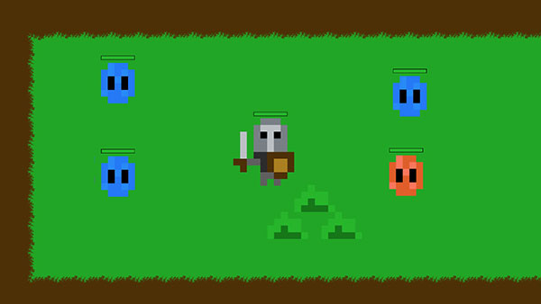
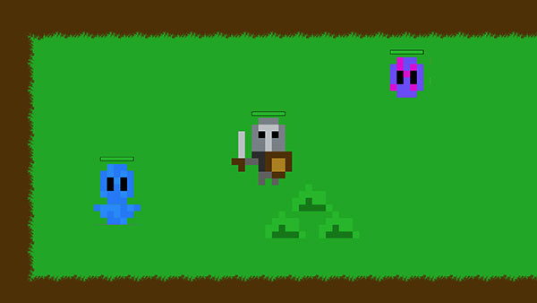
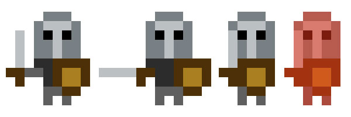
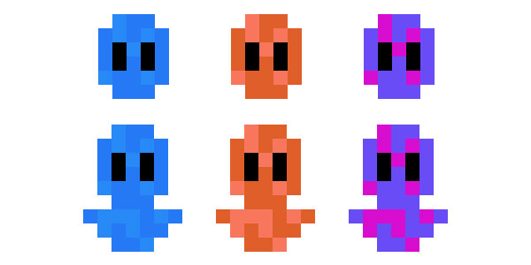
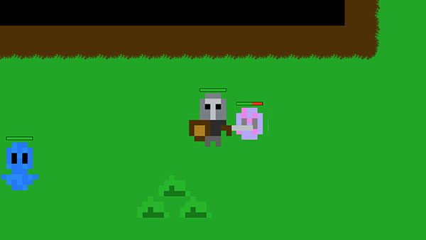
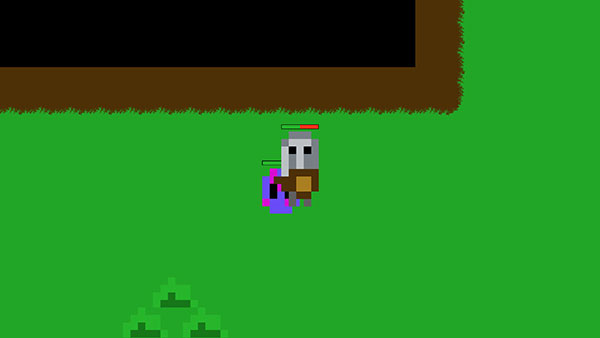
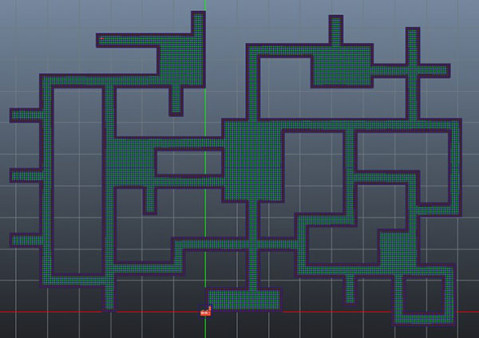

Esta foi minha quarta participação na game jam Ludum Dare, e pela quarta vez consegui terminar o jogo em 48 horas, o Metaforce. Porém, isto não quer dize que o jogo saiu do jeito que planejei ou que tenha ficado bom, apenas terminei o que comecei.
Em cada edição eu consigo acertar e errar em muitos detalhes, e desta vez não foi diferente. Vou contar um pouco sobre cada parte do projeto aqui, e o que deu certo e errado.
Programação
O que tinha grandes chances de ser meu maior erro acabou dando muito certo. Nas edições anteriores escolhi utilizar a Unity, pois é uma engine que estou acostumado e tenho mais experiência. Desta vez decidi utilizar algo diferente, e escolhi a Defold, uma engine que nunca nem sequer fiz um tutorial. Mais arriscado ainda foi que esta engine foi lançada publicamente mês passado, e apesar de estar em desenvolvimento há anos internamente na King, é algo novo. Tão novo que se não fosse a excelente documentação e exemplos, não seria possível utilizar pois não há muita coisa no Google além do forum deles.

Mas o que pareceu arriscado acabou dando muito certo. A Defold é uma engine incrível, com tudo que você precisa para desenvolver um jogo. É claro que ela possui defeitos e muita coisa para melhorar, principalmente a IDE interna para programar em Lua, mas não deixou a desejar durante o Ludum Dare.

Minha primeiro contato com esta engine foi duas horas antes de anunciarem o tema e começar o Ludum Dare, e achei tão simples que mesmo sem experiência decidi utilizar a Defold. Acho que por eu ter experiência com outras tecnologias, eu mais ou menos sabia onde estava ou como usar o que eu queria, o que me provou que a Defold é realmente uma excelente ferramenta de desenvolvimento e me lembrou de algumas ferramentas que utilizei quando trabalhava na EA.
Arte
Apesar da Defold ter sido uma boa surpresa durante meu fim de semana, acho que nada vai se comparar com a arte que fiz para jogo. Por que? Por que foi a primeira vez na minha vida que eu desenhei algo no PC e foi a primeira vez que tentei fazer pixel art. Só tive tempo de desenhar os personagens, mas isso já foi mais do que jamais fiz.

Quando o tema Shapeshit foi anunciado logo pensei em fazer um jogo onde o jogador controla um personagem que quando ataca um monstro ele se divide, ou quando dois monstros se colidem eles se juntam em um. Então logo percebi que eu iria precisar de um personagem e um monstros, sendo que o monstro teria que ter duas formas (grande e pequeno) e cores diferentes (azul, vermelho e roxo para quando se juntarem com cores diferentes).

Pesquisei algumas artes de jogos de Atari para usar como referência, e no final o desenho do meu personagem me lembrou um pouco Castle Crashers. Para fazer os monstros eu não usei referencias, mas no final lembrou um pouco um Creeper com cores diferentes. Até consegui fazer posições diferentes do personagem para o personagem atacar, ficar parado e tomar dano (andar fica pra próxima).
Game Design
Percebeu a minha empolgação em usar a Defold e ter conseguido desenhar meus primeiros personagens? Então, isso me fez praticamente esquecer algo muito importante: o game design do jogo. Na tarde de domingo, poucas horas antes do final do Ludum Dare, eu já tinha tudo que queria pronto: mapa criado com tiles, colisões funcionando (precisam de ajustes ainda, mas funcionam), personagem andando, atacando e tomando dano, contador de vida no personagem, contador de vida nos monstros, 2 cores de monstros que se juntavam em uma terceira cor, 2 tamanhos de monstro que se combinavam.

O problema foi que eu estava tão preocupado em terminar estas coisas listadas acima que não pensei em como juntar. Foi como se eu tivesse criado diferentes peças de Lego mas no final não sabia bem o que fazer com elas. Com pouco tempo e ainda alguns ajustes pra fazer acabei apenas adicionando um contador de pontos, sendo que monstros básicos davam 1 ponto e monstros transformados davam 2 pontos, e uma saída no final do mapa. Além disso, gravei uma música curta no violão usando meu celular e coloquei pra repetir. Por ter pouco tempo a música não ficou boa, mas pelo menos o jogo não ficou sem silêncio.

O resultado foi o jogo mais "complexo" que já desenvolvi no Ludum Dare, com muitas coisas legais, porém não ficou divertido por falta de pensar no game design. Nas edições anteriores eu sempre comecei com um papel e lápis pensando no game design, mas desta vez fiquei tão empolgado em usar a engine pela primeira vez e por ter conseguido desenhar que deixei isso de lado, e o jogo não ficou divertido.

Outra mudança foi que não exportei o jogo para mobile, embora esteja rodando muito bem no Android. Mas adicionei suporte a teclado e controle, inclusive com duas opções: controle do Xbox 360 e Steam Controller (um pouco bugado, mas funciona). Também não tive tempo de fazer uma tela de menu com o nome do jogo, mas isso eu sempre deixo por último por não influenciar a mecânica do jogo.
Conclusão
Para conseguir fazer um jogo legal em game jams como o Ludum Dare é preciso ter um bom balanceamento entre Programação, Arte (incluindo Som) e Game Design. Claro que fazer um jogo sozinho em 48 horas baseado em um tema que é revelado no início da contagem é desafiador o bastante para causa um desequilíbrio em todas as áreas. Nas edições anteriores sempre a arte ficou de lado, e dessa vez foi o game design. Espero que na próxima edição em Agosto eu consigo encontrar um equilíbrio melhor.
O nome do jogo, Metaforce, foi dado pela minha namorada, que ficou do meu lado brincando com meu cachorro Spock enquanto eu desenvolvia este jogo. Neste video do canal dela é possível ver eu trabalhando no jogo. O código do jogo está no GitHub e jogo para Web, Windows, Mac OS X e Linux está na página do Ludum Dare. Baixem, joguem, e me digam o que mais posso melhorar!